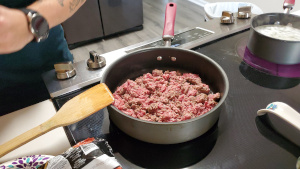

Cooking Instructions
- Cook potatos over medium heat until al dente. DO NOT OVER COOK!

- While potatos are cooking, cook your ground beef over medium heat.
 - When the ground beef begins to brown, add and stir in all of your seasonings; Italian Seasoning, Parsley Flakes, Oregano, Adobo, Basil, Garlic Powder, Racaito, Minced Garlic, and Sofrito (DO NOT ADD THE SAZON YET).
- Once the beef has browned, add in your Sazon and cook on low until potatos are done and drained. (Again, ensure the you do not cook the potatos too long or else they will break apart when you add them to beef)

- Add your diced potato to the meat and stir them in, cooking on low.
- Remove your meat/potatos from heat and get your Goya Discos open and ready.
- Add a generous amount of meat/potatos to your disco.
- Fold the disco in half and use a fork to press the edges closed (I go over the edges twice, to ensure they are closed, so that the discos do not open while cooking)
- Put your discos with meat/potatos into your preheated oil and cook on both sides until both sides are golden brown.
- And there you have it, Puerto Rican Pastelillos!!!!